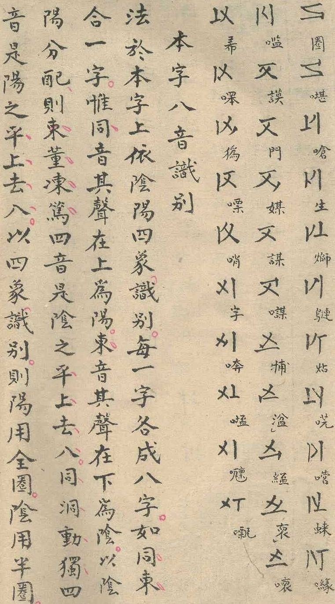
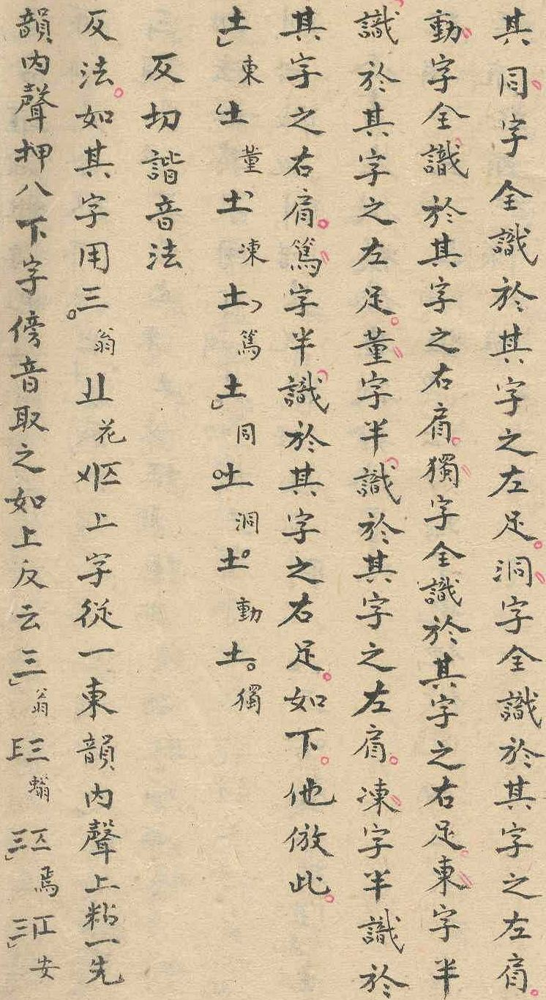

E14
| Claim | Tone marks: circle and semicircle in four corners, eight tones |
|---|---|
| Proposal sections | 4.4 |
| Source | Source 1, Source 1 |
| Page | 4 |
| Location | P. 4, the five columns after the Chi table, to p. 5, the first five columns |
| Status | located |


Transcription
本字八音識別法。於本字上依陰陽四象識別，每一字各成八字。如同東合一字，惟同音其聲在上為陽，東音其聲在下為陰。以陰陽分配，則東董凍篤四音是陰之平上去入，同洞動獨四音是陽之平上去入。以四象識別，則陽用全圈，陰用半圈。
其同字全識於其字之左足，洞字全識於其字之左肩，動字全識於其字之右肩，獨字全識於其字之右足；東字半識於其字之左足，董字半識於其字之左肩，凍字半識於其字之右肩，篤字半識於其字之右足。如下。他倣此。
{CU 東}{CU 董}{CU 凍}{CU 篤}{CU 同}{CU 洞}{CU 動}{CU 獨}
Translation
Method of distinguishing the eight tones of a character: on the character, distinguish by yin and yang and the four images (四象), so that each character forms eight characters. For example, 同 and 東 are combined in one character; but the sound of 同 is above and is yang, the sound of 東 is below and is yin. Divided by yin and yang, the four sounds 東 董 凍 篤 are the level, rising, departing and entering tones of yin, and the four sounds 同 洞 動 獨 are the level, rising, departing and entering tones of yang. Distinguished by the four images, yang uses a full circle and yin a half circle.
For 同 the full circle is marked at the left foot (lower left) of the character, for 洞 at the left shoulder (upper left), for 動 at the right shoulder (upper right), for 獨 at the right foot (lower right); for 東 the half circle at the left foot, for 董 at the left shoulder, for 凍 at the right shoulder, for 篤 at the right foot. As below; the others follow this pattern. [Draft translation, to be checked]
Notes
Findings
- Register by shape: full circle for dương (yang), half circle for âm (yin) (p. 4).
- Tone class by corner, named for each example: left foot (lower left) bình, left shoulder (upper left) thượng, right shoulder (upper right) khứ, right foot (lower right) nhập (p. 5).
- The example column on p. 5 writes the unmarked Cán of đông with all eight tone marks, annotated 東 董 凍 篤 同 洞 動 獨 (E15).
- In Source 2 the scribe first wrote 平去上入 for yin and marked 去上 for transposition (C02).
Open
- The source states that 同 洞 動 獨 are the level, rising, departing and entering tones of yang (平上去入, p. 4) and places 洞 at the left shoulder and 動 at the right shoulder (p. 5). The rime tradition (Guangyun) assigns 動 to the rising tone and 洞 to the departing tone (洞: 徒弄切, after Wiktionary), giving the series 同 動 洞 獨.
- 洞 has the Sino-Vietnamese readings đỗng and động (hvdic.thivien.net, https://hvdic.thivien.net/whv/洞, citing Thiều Chửu and Từ điển trích dẫn: "Ta quen đọc là 'động'"); the reading đỗng has been checked. With đỗng the series 同 洞 動 獨 reads đồng, đỗng, động, độc and follows the Vietnamese tones huyền, ngã, nặng and the entering nặng; the yin series 東 董 凍 篤 reads đông, đổng, đống, đốc.
- By naming 洞 as the rising tone of yang, the source shows that it reads 洞 đỗng.
- Printed reference: Tự điển chữ Nôm trích dẫn (字典𡨸喃摘引), p. 403, left column, second entry: 洞 đỗng (động, đùng), Bộ 水, Nét 85.6-9, U+6D1E, "☞ 洞: động (trang 403)". The entry is a cross-reference only and quotes no example for đỗng. Dictionary: Nguyễn Hữu Vinh, Đặng Thế Kiệt, Nguyễn Doãn Vượng, Lê Văn Đặng, Nguyễn Văn Sâm, Nguyễn Ngọc Bích, Trần Uyên Thi, Viện Việt-Học (Institute of Vietnamese Studies), USA, 2009 (from the cover). The Nôm Foundation (nomfoundation.org) describes it as a collective work of seven co-authors compiled by the Institute of Vietnamese Studies, printed in Taiwan in 2009, 1,708 pages.
- The age and currency of the reading đỗng around 1840 is not established and is not used for dating.